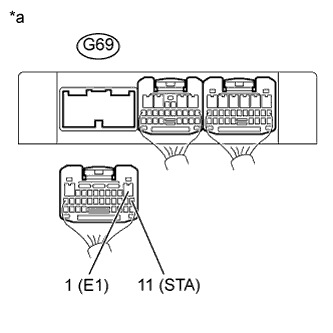
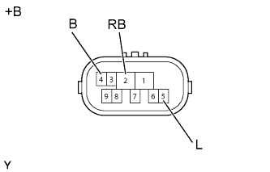

DTC P0617 Высокий уровень сигнала в цепи реле стартера |
| Код DTC | Условие обнаружения DTC | Неисправный участок |
| P0617 | Выполняются все следующие условия (логика диагностирования за 1 поездку): (а) Скорость автомобиля превышает 20 км/час (12,4 мили в час). (b) Частота вращения коленчатого вала двигателя превышает 1000 об/мин. (c) Сигнал STA включен. (d) Напряжение аккумуляторной батареи (не менее 10,5 В) подается на TCM в течение 20 с. |
|
| 1.СНИМИТЕ ПОКАЗАНИЯ ПОРТАТИВНОГО ДИАГНОСТИЧЕСКОГО ПРИБОРА (STARTER SIGNAL) |
Подсоедините портативный диагностический прибор к DLC3.
Включите зажигание (IG).
Включите портативный диагностический прибор.
Войдите в следующие меню: Powertrain / ECT / Data List.
Считайте значение, отображенное на портативном диагностическом приборе.
Запустите прокручивание коленчатого вала двигателя стартером.
Считайте значение, отображенное на портативном диагностическом приборе.
| Информация на дисплее прибора | Измеряемая величина / диапазон измерения | Нормальное состояние | Замечание по диагностике |
| Starter Signal | Сигнал стартера / ON (ВКЛ) или OFF (ВЫКЛ) |
| - |
|
| ||||
| OK | |
| 2.ПРОВЕРЬТЕ TCM (НАПРЯЖЕНИЕ STA) |
|  |
Отсоедините разъем G69 TCM.
Измерьте напряжение в соответствии со значениями, приведенными в таблице.
| Контакты для подключения диагностического прибора | Состояние | Заданные условия |
| G69-11 (STA) - масса | Зажигание включено (IG), рычаг переключения передач в положении P или N | Менее 2 В |
Выключите зажигание.
Измерьте сопротивление в соответствии со значениями, приведенными в таблице ниже.
| Контакты для подключения диагностического прибора | Состояние | Заданные условия |
| G69-1 (Е1) - масса | Всегда | Менее 1 Ом |
| *a | Вид сзади разъема со стороны жгута проводов (к TCM) |
|
| ||||
| OK | ||
| ||
| 3.ПРОВЕРЬТЕ ДАТЧИК ПОЛОЖЕНИЯ ПАРКИНГА/НЕЙТРАЛИ В СБОРЕ |
|  |
Отсоедините разъем C40 датчика положения паркинга / нейтрали.
Измерьте сопротивление в соответствии со значениями, приведенными в таблице ниже.
| Контакты для подключения диагностического прибора | Состояние | Заданные условия |
| 4 (B) - 5 (L) | Рычаг переключения передач в положении Р | Менее 1 Ом |
| 4 (B) - 5 (L) | Рычаг переключения передач в положении N | Менее 1 Ом |
| 4 (B) - 5 (L) | Рычаг переключения передач не в положении Р | 10 кОм или более |
| 4 (B) - 5 (L) | Рычаг переключения передач не в положении N | 10 кОм или более |
| 2 (RB) - 5 (L) | Рычаг переключения передач в положении P, R, N, D или S | 10 кОм или более |
| Результат | Следующий шаг |
| OK (для моделей с DPF) | А |
| OK (для моделей без DPF) | B |
| NG | C |
| *a | Устройство с неподсоединенным жгутом проводов (датчик положения паркинга/нейтрали) |
|
| ||||
|
| ||||
| А | ||
| ||